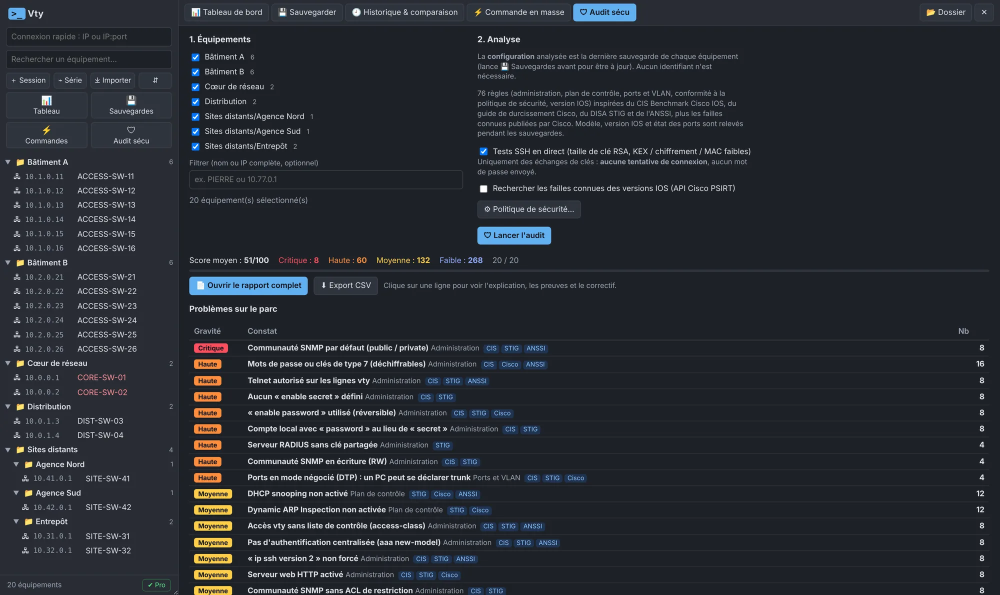
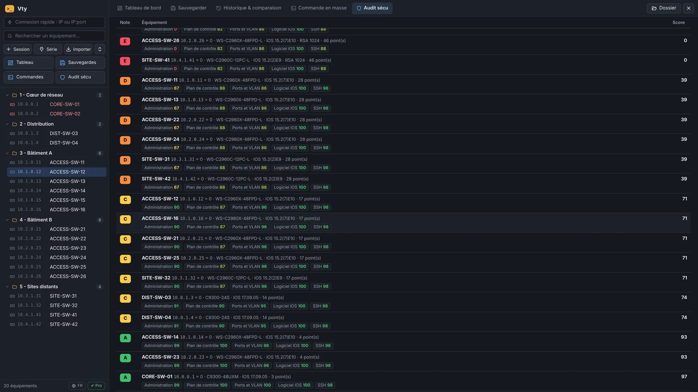

vty# show captures
Ce que tu vois en ouvrant Vty.
Captures de la vraie application, sur un parc d'exemple : les noms et les adresses sont fictifs.





SSH et console série pour switchs Cisco, pensé pour les équipes qui gèrent des dizaines ou des centaines d'équipements. Parc rangé par dossiers, écran partagé, macros, sauvegardes de configs, commandes en masse et audit sécu noté de A à E. Avec des garde-fous en plus contre les erreurs.
vty# show demo
Sessions SSH, écran partagé, macros, sauvegardes, commandes en masse, audit sécu et garde-fous, filmés sur un parc fictif de 20 switchs.
vty# show captures
Captures de la vraie application, sur un parc d'exemple : les noms et les adresses sont fictifs.


vty# show fonctions
Gratuit : SSH (mot de passe, clé ou agent Pageant), Telnet, console série, onglets, recherche instantanée, garde-fous, journaux de session et import MobaXterm / PuTTY / CSV, jusqu'à 25 équipements. Les fonctions marquées PRO s'ajoutent avec la licence Pro.
Une commande tapée une fois, envoyée sur tous les onglets cochés.
6 équipements en parallèle. Une version n'est gardée que si la config a changé, avec comparaison ligne à ligne.
82 contrôles inspirés du CIS Benchmark, du DISA STIG et de l'ANSSI, avec le correctif prêt à coller.
Ta version IOS comparée aux avis de sécurité Cisco PSIRT, avec la première version corrigée.
show en lecture seule sur tout le parc, filtre en direct et export CSV.
Port ToIP + PC, VLAN sur un trunk, port err-disabled… champs vérifiés et aperçu avant envoi.
Glisser-déposer une image IOS, MD5 vérifié par le switch après l'envoi.
Équipements joignables, sauvegardes anciennes, notes d'audit, alertes : tout le parc en un écran.
vty# show securite
Données d'exemple. Chaque constat donne l'explication, la preuve (secrets masqués) et le correctif avec les vrais noms de ports.
vty# show tarifs
Une seule installation : la version gratuite devient Pro dès que tu colles ta clé de licence. La clé est vérifiée sur ton poste, sans connexion Internet.
Licence à vie · 1 an de mises à jour inclus
Envoie un e-mail avec l'objet « Vty Pro » à :
contact@getvty.comOu ouvrir ma messagerie. Tu seras prévenu le jour de l'ouverture des ventes.
Après la première année, ta version reste Pro à vie. Le renouvellement sert seulement à recevoir les nouvelles versions.
vty# show versions
Interface repensée : icônes nettes à la place des emojis, menus, fenêtres et tableaux plus lisibles, barres de défilement discrètes, petites animations. Terminaux plus fluides : affichage par la carte graphique (désactivable dans le menu langue en bas à gauche), même avec de gros « show » et 4 terminaux à l'écran. Tableau de bord, audit et commandes en masse mis à jour ligne par ligne : plus de saccades pendant les traitements, les détails ouverts restent ouverts. Barre d'outils compacte quand la fenêtre est étroite, onglets qui défilent à la molette, barre latérale réglable en largeur (glisser son bord). La date de sortie s'affiche à côté du numéro de version dans la fenêtre de mise à jour ; la vérification des failles Cisco ne se lance que si sa case est cochée.
Vty en anglais : l'interface suit la langue de Windows (français ou anglais), avec un choix manuel en bas à gauche (FR / EN). Messages, rapports d'audit, journaux de session et macros fournies traduits ; les dates s'affichent au format AAAA-MM-JJ en anglais. Site en anglais : getvty.com/en.
Connexion par clé SSH (OpenSSH, PEM, PKCS#8) ou par agent (Pageant, agent OpenSSH de Windows) : seul l'emplacement de la clé est enregistré, la phrase secrète est demandée à chaque connexion. Telnet pour les vieux équipements, avec un bandeau « non chiffré » bien visible. Journaux de session automatiques dans des fichiers texte (désactivés par défaut, réglables par équipement). Import des sessions MobaXterm et PuTTY (dossiers conservés, identifiants jamais importés). Mauvais mot de passe : Vty redemande au lieu de couper.
Exemples et textes de l'audit rendus génériques (supervision SNMP, collecteur syslog / SOC), VLAN par défaut des macros : 20 et 30. Site : aperçu de partage et icône.
Vty signale les nouvelles versions au démarrage, avec les nouveautés et un lien vers le site (désactivable dans la fenêtre Licence). Rien n'est téléchargé ni installé automatiquement, et aucune donnée n'est envoyée.
Version gratuite (SSH, console série, garde-fous, 25 équipements) et version Pro (tout le reste, équipements illimités). Licence Pro à vie, vérifiée sur le poste sans connexion Internet, avec 1 an de mises à jour.
Première version publique. Audit sécu avec risques acceptés et date de revue, rapport HTML, politique de sécurité personnalisable.
Installe, ouvre, importe ton CSV d'équipements, et c'est parti. La même installation sert pour la version gratuite et la version Pro : il suffit de coller ta clé de licence.
Analyse VirusTotal de l'installeur
Si Windows affiche « Windows a protégé votre ordinateur » : Informations complémentaires, puis Exécuter quand même. L'installeur n'est pas encore signé.
SHA-256 : 1f585903a0921ccdcb13b777a669f348ebc398e4e8c37f72e1084e6d5dd88142